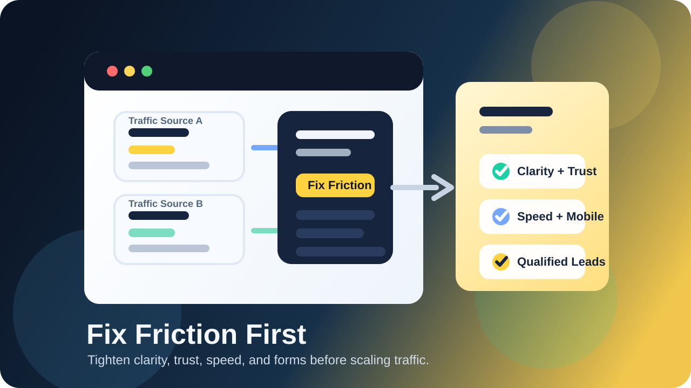
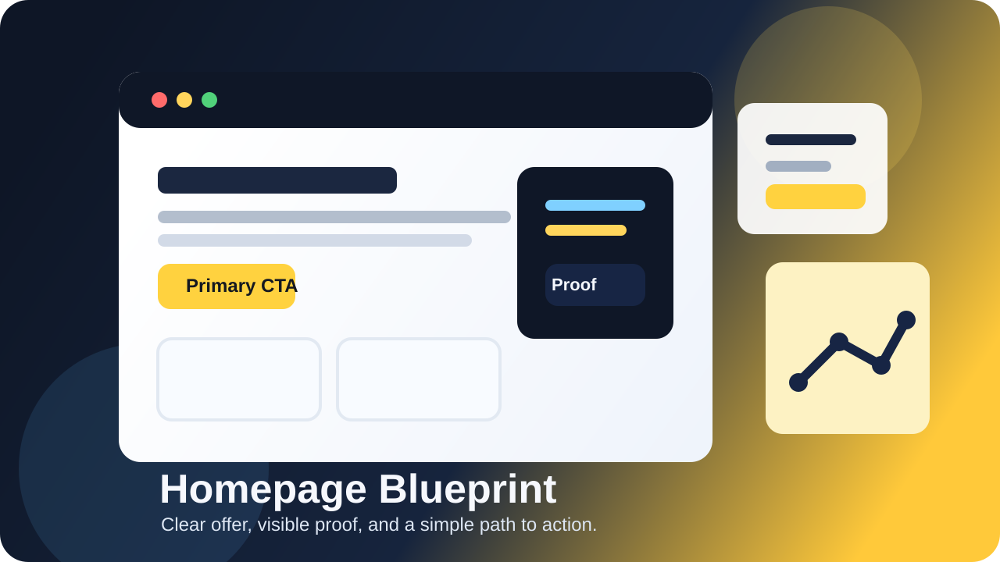
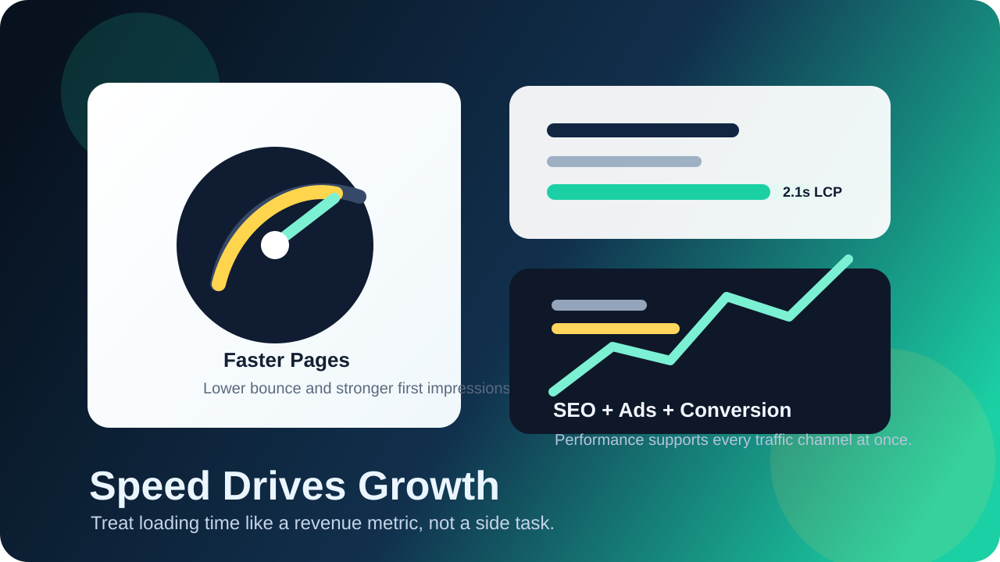

We design, build, and optimize websites that move pipeline metrics, not just pixels.
Every Webakoof project combines speed engineering, persuasive UX writing, and conversion analytics.
From acquisition to qualified pipeline, each stage gets a dedicated experience layer with measurable KPIs.
01. Capture AttentionMessage hierarchy + speed engineering for lower bounce.
02. Build TrustProof blocks, case outcomes, and intent signals.
03. Trigger ActionCTA architecture and friction-free form flow.
04. Improve ContinuouslyTracking, experiments, and KPI loops post-launch.
Attention Layer: First 5 Seconds
We optimize first-view clarity and loading behavior to prevent high-intent visitors from dropping.
Loaded SessionsEngaged VisitorsHigh Intent
Trust Layer: Proof + Positioning
Authority, social proof, and outcome snapshots are placed at the exact decision points.
+68%Demo requests after proof re-order
-31%Bounce after credibility stack rebuild
+44%Form starts from trust CTA placement
2.3xHigher conversion on mobile journeys
Action Layer: Frictionless Conversion
CTA intensity and form architecture are tuned to maximize qualified submissions.
cta-flow-check.log
Primary CTA CTR up to 5.8%.
Form completion improved by +27%.
Low-intent drop-off reduced by -22%.
Optimization Layer: Always Improving
Post-launch experiment cadence keeps growth compounding month after month.
Experiment Velocity8/mo
Winning Test Rate41%
SQL Lift Momentum+29%
Why Clients Switch To Webakoof
Believing Points That De-Risk Your Decision
Growth teams hire us after paying for beautiful websites that do not move revenue. Our process is built
around lead quality, sales velocity, and CAC payback.
Pipeline-Linked KPI Dashboard
Every build ships with KPI mapping to MQL, SQL, and booked revenue so you can prove ROI internally.
Speed + UX Engineering
We optimize load sequence, structure, and interaction timing to reduce bounce and improve intent signals.
Dedicated Conversion Pod
Your account gets a strategist, UI lead, and frontend engineer aligned to one measurable growth plan.
90-Day Improvement Sprint
Post-launch, we run a structured experimentation cycle to increase conversion and lower cost per lead.
Proof In Numbers
Performance Data You Can Defend In Board Meetings
0%
Avg. lead growth in 6 months
0%
Average lower cost-per-lead
0+
Client engagements delivered
0/5
Client satisfaction score
Delivery Guarantee: launch readiness checklist, analytics QA, SEO fundamentals, and Core Web Vitals baseline are mandatory in every project scope.
Live KPI Charts
Visual Performance Signals, Not Guesswork
These chart modules mirror how we report conversion health and optimization trend lines every week.
Cost Per Lead Trend
12-week reduction after redesign + CRO sprint
Qualified Lead Growth
Momentum after message + trust layer updates
Experiment Win Rate
Winning variation ratio by month
Planning Tools
Estimate ROI And Delivery Timeline In Minutes
Use these quick estimators to decide whether you need fast-start execution or a premium growth program.
ROI Calculator
Projection using your current traffic and conversion assumptions.
Current Monthly Leads0
Projected Monthly Leads0
Current Revenue₹0
Projected Revenue₹0
Estimated Revenue Lift+ ₹0
Timeline Estimator
Fast estimate for delivery window by engagement mode and scope.
Selected delivery snapshots from SaaS, D2C, and B2B projects.
SaaS Pipeline Website Rebuild
Re-architected messaging and UI hierarchy for faster qualification.
MQL Growth+142%
Bounce Reduction-33%
Demo Requests+68%
D2C Conversion Funnel Redesign
Improved product storytelling and mobile checkout interactions.
Cart Conversion2.3x
ROAS Improvement+46%
LCP Improvement3.1s
B2B Service Website Scale-Up
Built lead qualification pathways for enterprise-ready opportunities.
Qualified Leads+91%
CPL Reduction-28%
SQL Rate+37%
Revenue Funnel
How We Execute: Discovery, Dev, Launch
1. Discovery
Market positioning, conversion friction analysis, and KPI planning for aligned business outcomes.
2. Dev
Semantic frontend build with responsive systems, analytics events, and performance targets.
3. Launch
QA, deployment, reporting setup, and optimization sprint to accelerate post-launch growth.
Package Comparison
Transparent Comparison For Fast Decisions
Compare deliverables across low-ticket and premium options before you commit.
Capability
Starter
Growth
Scale
Best For
Low-ticket quick launch
Monthly growth teams
Premium scale organizations
Design + Frontend Scope
1-2 pages
Landing page pipeline
Multi-flow website ecosystem
Tracking Layer
Core events
Extended event map
Advanced attribution architecture
Optimization Support
Launch baseline
Monthly CRO cycle
Continuous strategy + experimentation
Delivery Window
7-12 business days
4-8 weeks rolling
Custom pod schedule
Commercial Model
₹14,999 fixed
Discuss on call
Discuss on call
Premium Client Confidence
Strategic governance includes SLA response windows, milestone accountability, and KPI reporting for leadership visibility.
Dedicated pod ownershipWeekly exec reportPriority remediation
Low-Ticket Buyer Clarity
Starter package includes fixed deliverables, transparent timeline, and handover checklist with no hidden scope creep.
Fixed scopeFast turnaroundClear handoff docs
From The Blog
Website Growth Insights You Can Apply Before Your Next Launch
Five practical reads on conversion strategy, speed, trust building, landing page alignment, and website friction fixes for businesses that want websites to generate real leads.

Lead Gen25 March
Before You Scale Traffic, Fix These Website Friction Points First
More traffic does not solve a weak page. Tighten clarity, trust, speed, and forms first so better leads are ready to convert.
Audit FlowBetter ROASMobile UX

CRO24 March
Homepage Blueprint: Turn More Visitors Into Qualified Leads
Your homepage should explain the offer, build trust fast, and move serious buyers toward a clear next step.
Offer ClarityProof BlocksCTA Flow

Performance20 March
Why Website Speed Improves SEO, Ads, And Conversion Together
Fast pages do more than feel nice. They reduce drop-off, improve campaign efficiency, and strengthen first impressions.
One of the most expensive mistakes in digital marketing is sending more traffic to a page that is already leaking attention. When leads feel weak, many businesses assume the answer is to increase ad spend, publish more content, or push harder on outreach. Sometimes the real issue is simpler. The website is creating friction before serious buyers reach the contact step. Friction can come from vague headlines, weak proof, slow loading, confusing layouts, cluttered forms, or calls to action that ask too much too soon. More traffic will only amplify those problems. Before you scale visibility, you need to make sure the page is ready to convert the people who arrive.
The first place to audit is clarity. A visitor should understand what you offer, who it is for, and what to do next within a few seconds. If your hero section sounds clever but not specific, buyers have to work too hard to interpret the message. That creates hesitation immediately. Strong websites reduce thinking effort. The headline names the outcome, the supporting copy explains relevance, and the primary call to action feels obvious. If a user cannot quickly tell why your service is valuable to them, sending more traffic will mostly create more bounce rather than more qualified conversations.
The second audit area is proof. Traffic converts better when the website answers the silent question, "Why should I trust this business?" Testimonials, case studies, before-and-after examples, numbers, recognisable client categories, and a clear process all help reduce doubt. Proof should sit close to the claims it supports instead of being hidden on another page. If you are asking someone to book a call, request a quote, or message your team, the page should make that step feel low-risk and credible. Better proof does not just improve conversion rate. It often improves lead quality because more serious buyers feel confident enough to reach out.
The third area is usability, especially on mobile. Many websites technically work on a phone while still making the conversion path harder than it needs to be. Buttons may sit too low, sections may feel too long before trust appears, or forms may ask for too much information upfront. Speed problems make this worse. A page that loads slowly or shifts around as assets appear feels unreliable before the visitor even starts reading. When traffic gets more expensive, those friction points matter more. Tight mobile spacing, fast load times, visible CTAs, and thoughtful form design protect the value of every click you earn or pay for.
The final step is measurement. Before increasing traffic, make sure you can actually see where visitors are dropping off. Track CTA clicks, form starts, form completions, scroll depth, and the sections that earn the most engagement. Those signals help you improve the page with intention instead of guesswork. At Webakoof, we usually find that the best-performing websites are not the ones shouting the loudest. They are the ones removing obstacles most consistently. Fix the friction first, then scale the traffic source that is already working. That order protects budget, improves lead quality, and gives your campaigns a stronger base to grow from.
Planning to increase traffic but not sure your website is ready? Webakoof audits pages for clarity, trust, speed, and conversion flow before you spend more to get visitors.
Most homepages underperform for one simple reason: they try to impress before they clarify. A visitor lands on the page and, within a few seconds, asks three silent questions. What does this company actually do? Is it for someone like me? What should I do next? If your page answers those questions fast, people keep scrolling. If it does not, even strong visuals will not save the conversion. A homepage is not just a digital brochure. It is the front door to your sales process. At Webakoof, we treat the homepage as the place where message, trust, and action come together. Design matters, but the order of information matters just as much.
The first screen should do the heaviest lifting. Your headline should name the outcome, not just the service. Your subheading should explain who you help and how. Your primary button should be obvious and specific, whether that means booking a call, requesting a proposal, or seeing your work. Many businesses lose good visitors because the hero section is too vague, too crowded, or too clever. If a prospect has to decode your offer, they will usually leave. The strongest homepages feel simple because the strategy is sharp. They remove confusion, highlight relevance, and quickly show why your solution deserves attention.
Once the visitor understands the offer, the next job is trust. Claims without proof feel like marketing. Claims supported by numbers, testimonials, before-and-after outcomes, and a clear process feel believable. This is why proof blocks should sit close to key promises. If you say you build revenue-focused websites, show conversion improvements, launch speed, or client feedback that supports it. If you say you work fast, explain your workflow and delivery checkpoints. A homepage should guide a visitor from curiosity to confidence. That means every important statement should be paired with a reason to believe it.
Below the fold, the page should continue reducing friction. Show your services in terms of business outcomes, not only features. Explain how discovery, design, development, and launch connect to growth. Repeat strong calls to action after major sections so the visitor never has to search for the next step. Keep mobile in mind too. A large share of website traffic arrives on phones, which means your copy must scan well, buttons must stay easy to tap, and proof must remain visible without overwhelming the layout. A premium-looking website is helpful, but a structured website that guides decisions is what usually wins the lead.
The final layer is measurement. A high-converting homepage is never finished after launch. You need to track button clicks, form starts, form completions, scroll depth, and the sections people engage with most. That data shows where visitors gain confidence and where they hesitate. Over time, small improvements to wording, proof, CTA placement, and page speed can have a meaningful effect on qualified leads. The homepage should be treated like a conversion system, not a one-time design exercise. When clarity, proof, and action work together, your website starts behaving like part of the sales team instead of a passive online brochure.
Need help restructuring your homepage for better conversions? Webakoof plans, designs, and builds websites around lead quality, speed, and measurable growth.
Website speed is often treated like a technical checklist item, but in practice it is a sales and marketing issue. When a visitor clicks your ad, search result, or social link, speed becomes part of the first impression. A slow load creates doubt before your message even appears. People start wondering whether the business is active, trustworthy, or worth the wait. On mobile, the effect is even stronger because users are usually distracted, comparing options quickly, and working with weaker connections. This is why faster websites do not just feel better. They usually hold attention longer, reduce bounce, and create a smoother path into the offer.
Speed also influences the channels that send you traffic. Search engines reward pages that deliver a cleaner user experience, especially when layout shifts are controlled and main content loads quickly. Paid campaigns benefit too because visitors from ads are often colder and less patient than branded traffic. If a landing page takes too long to become usable, part of your ad spend is lost before the pitch even starts. Good performance supports SEO, campaign efficiency, and conversion together. That is why Webakoof treats site speed as a growth lever, not just a developer metric hidden inside a report.
The biggest performance issues are usually predictable. Oversized images, unoptimized videos, heavy sliders, too many third-party scripts, cluttered code, and poor font loading can all slow a page down fast. Sometimes a site looks polished on a designer's laptop but feels sluggish on an average mobile device in the real world. That gap matters. The best approach is to prioritize what creates business value first. Load essential content early, compress media properly, keep scripts lean, delay non-critical features, and avoid decorative elements that slow down action-oriented pages. Performance should support the message, not compete with it.
Speed improvements also tend to improve conversion quality because the experience feels more stable. Buttons respond faster, forms become easier to complete, and users can read without sudden layout jumps. This matters most on landing pages, service pages, and checkout flows, where hesitation is expensive. If your site is running ads, every second of delay can lower the number of people who reach your offer with full attention. Faster pages help prospects get to the proof, pricing, and contact step before interest drops. In that sense, performance work protects the value of every visitor you already paid to attract.
The smartest teams treat speed as an ongoing standard, not a one-time cleanup. Set performance budgets before building, test on mobile devices, and review Core Web Vitals after every major update. Keep asking whether a new script, animation, or plugin is helping revenue or just adding weight. The goal is not to chase perfect scores for vanity. The goal is to create a website that loads quickly, feels reliable, and removes friction from the buying journey. When your website is fast, your SEO has a stronger foundation, your ads waste less money, and your conversion paths stay clear from first click to final form submission.
Want a faster website without sacrificing design quality? Webakoof builds conversion-focused pages that stay lightweight, responsive, and ready for growth campaigns.
One of the fastest ways to waste ad budget is to send paid traffic to a page that is trying to do everything at once. A homepage usually has multiple audiences, multiple navigation options, and a broader brand story. That can be useful for general browsing, but paid clicks are different. When someone taps an ad, they arrive with a specific expectation shaped by the headline, creative, offer, and audience targeting. If the landing page changes the message or makes the visitor search for relevance, momentum drops immediately. Message match is what keeps the click feeling consistent from ad to page to next step.
A strong landing page continues the promise instead of resetting the conversation. If the ad talks about a website redesign for service businesses, the page should open with that exact context. If the ad promotes a fast-start package, the page should confirm the fixed scope, timeline, and price quickly. This does two useful things at the same time. It reassures the right visitor that they landed in the correct place, and it helps the wrong visitor self-filter before they submit a weak lead. Better message match often improves conversion rate, but it also improves lead quality because the page is clearer about who the offer is for.
Dedicated landing pages also remove distractions. Fewer navigation choices, fewer competing calls to action, and tighter supporting proof make it easier for people to move forward with intent. Instead of pushing every visitor into the same generic experience, you can align each page to a campaign theme, customer pain point, or service package. This is especially valuable when you run multiple ad sets for different audiences. A local service page, a premium strategy offer, and a low-ticket launch package should not all sound identical. Matching the page to the traffic source gives each campaign a better chance to qualify interest instead of collecting noisy form fills.
The form and proof sections matter just as much as the hero area. Proof should reinforce the exact promise the ad made, whether that means faster launch speed, stronger lead quality, or better conversion performance. Forms should ask for enough detail to protect sales time without making serious buyers jump through unnecessary hoops. Even microcopy can improve message match. Button labels, section headlines, FAQs, and reassurance near the form should all sound connected to the original offer. When the whole page speaks one language, the experience feels more trustworthy and more intentional, which gives the visitor fewer reasons to hesitate.
The final advantage is measurement. With dedicated landing pages, you can track campaign-specific behavior more clearly: scroll depth, form starts, form completion rate, CTA clicks, and which message angles create the best leads. That makes optimization easier because you are not trying to interpret blended traffic on a one-size-fits-all page. Over time, small changes to headline clarity, proof placement, offer framing, and form friction can meaningfully improve return on ad spend. If you are investing in traffic, the landing page should protect that investment. Better message match does not just increase clicks into leads. It helps the right prospects arrive with more confidence from the very first second.
Running ads to a page that feels too broad? Webakoof builds focused landing pages with stronger message match, cleaner tracking, and better lead intent.
Many service businesses assume poor leads are only a traffic problem, so they spend more on ads or SEO before fixing the website itself. In reality, weak lead quality often starts with weak trust. A visitor may understand what you offer, but still hesitate because the site does not make the business feel established, reliable, or easy to work with. Trust is what helps a buyer move from interest to inquiry. Without it, the website attracts clicks but not confidence. That is why high-performing service websites need a clear trust stack: a set of signals that show credibility before the visitor has to take a risk.
A practical trust stack usually includes a few core elements. First, your offer should be specific enough that visitors know who you help and what problem you solve. Second, proof should appear early in the form of testimonials, results, reviews, case studies, or visual examples of past work. Third, your process should feel transparent. People want to know what happens after they contact you, how long a project may take, and what kind of communication to expect. Fourth, the website should show real human presence through team details, founder visibility, or authentic brand voice instead of generic stock-style messaging.
For service businesses that depend on local or regional demand, trust and local SEO often support each other. A website that clearly shows service areas, phone number, email, city references, and consistent business details feels easier to verify. Location-based proof, such as local case studies or client testimonials, can make the offer feel more immediate and believable. This is especially useful when users compare multiple providers quickly. If someone lands on your site and instantly sees that you serve their market, understand their type of project, and have real evidence of delivery, the conversation starts from a stronger place.
Where you place trust signals matters just as much as whether you include them. Testimonials hidden on a separate page help less than proof placed near calls to action. A polished hero section without supporting credibility underneath can still feel risky. The best websites keep reinforcing trust throughout the journey: proof near claims, FAQs near friction points, clear pricing or scope guidance where uncertainty appears, and strong contact information wherever commitment is requested. Even form design plays a role. Shorter, more thoughtful forms often attract better inquiries because they feel respectful and lower the effort required to start a conversation.
The goal is not to overload the page with badges, logos, and claims. Trust grows when the website feels consistent, honest, and easy to navigate. Strong design, fast loading, clear copy, and visible proof all work together to reduce doubt. When your trust stack is solid, paid traffic performs better, organic traffic converts better, and sales calls begin with more confidence. Before increasing your traffic budget, make sure your website is ready to receive it. A trustworthy website does not just look professional. It helps the right buyers believe they are in the right place and makes it easier for them to take the next step.
Need a website that builds trust before your sales call starts? Webakoof combines proof-driven copy, strong UX, and fast development to improve lead quality.